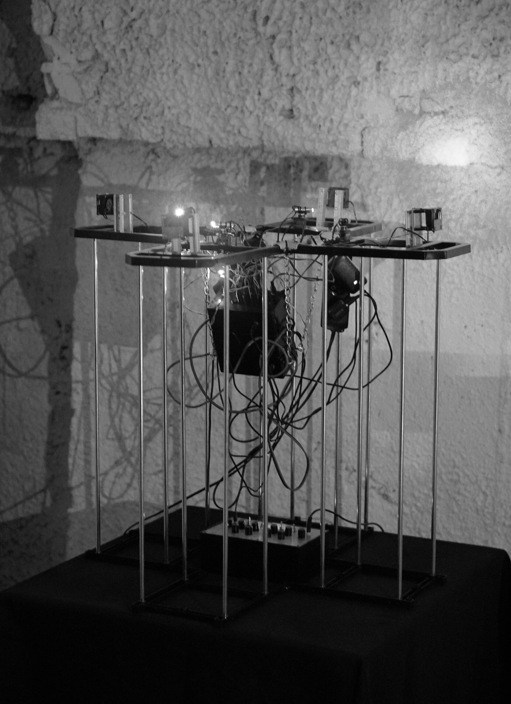

VLADISLAV GENERALOV
FLUXBRIDGE
2025

Fluxbridge is a generative technological object that explores the fantasy of possible transformations between different types of flows (physical mediums). It functions as a technical instrument for materializing synesthesia in the physical world.
Four streams of light are guided by the motion of servomotors and, passing through the blades of fans, are interrupted at audio frequencies. The resulting sum of electrical signals is processed through digital effects, evolving into an endless soundscape.
The control algorithms for the servomotors, fans, light sources, and sound effects are based on pseudorandomness.